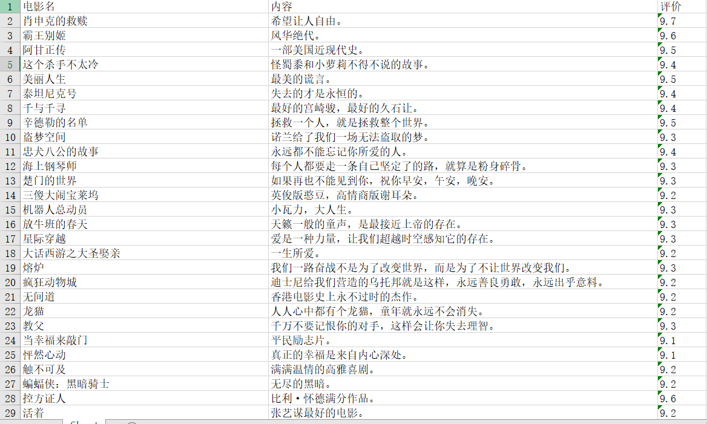

python爬虫爬数据b保存为excel文件
python 模块
- lxml.html
- openpyxl
- requests
之前导出文件的格式都是txt，感觉看起来很麻烦，这次想要使用excel导出试试看，稍微简单的爬了一下豆瓣top250的电影。
代码
import requests
from openpyxl import workbook
from openpyxl import load_workbook
import lxml.html
def url_open(url):
headers ={
'User-Agent':'Mozilla/5.0 (Windows NT 10.0; WOW64) AppleWebKit/537.36 (KHTML, like Gecko) Chrome/70.0.3538.25 Safari/537.36 Core/1.70.3741.400 QQBrowser/10.5.3863.400',
}
html = requests.get(url,headers=headers).text
return html
def content(html):
tree = lxml.html.fromstring(html)
td = tree.cssselect('div.hd')
tt = tree.cssselect('p span.inq')
pp = tree.cssselect('span.rating_num')
pj = []
name = []
text = []
for i in td:
i=i.text_content().strip().split('/')[0]
name.append(i)
for t in tt:
t=t.text_content()
text.append(t)
for a in pp:
a =a.text_content()
pj.append(a)
for b in range(25):
if len(text)<25 :
for h in range(25-len(text)):
text.append('最后25个电影中有些无内容，顺序会错乱，需要核对')
ws.append([name[b],text[b],pj[b]])
def get_250():
for i in range(10):
url='https://movie.douban.com/top250?start='+str(i*25)+'&filter='
html = url_open(url)
content(html)
if __name__=='__main__':
url='https://movie.douban.com/top250?start=0&filter='
html = url_open(url)
wb = workbook.Workbook()
ws = wb.active
ws.append(['电影名','内容','评价'])
get_250()
wb.save('test.xlsx')导出execl成果
